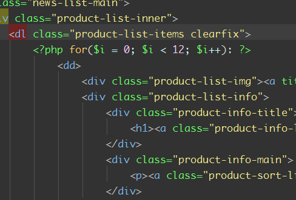
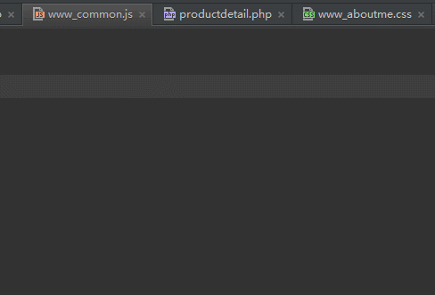
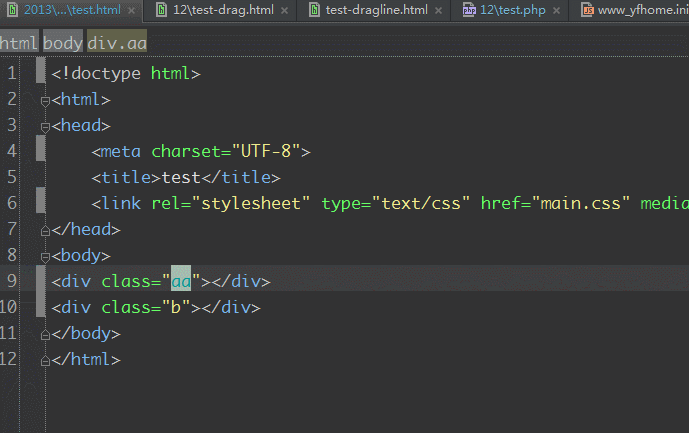
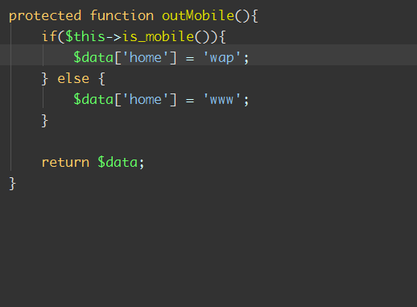

webstorm快捷键
shift + F6可以理解为F2的豪华重量版，不但可以重命名文件名，而且可以命名函数名，函数名可以搜索引用的文件，还可以重命名局部变量。还可以重命名标签名。
软回车(shift+enter, ctrl+enter，使与sublime text保持一致)就是不论光标在当前行的任何位置，都可以跳转到下一行。

alt + 左右方向键，快速切换tab选项卡：

ctrl + up, down移动视图，方便快捷的移动代码窗口
alt + up, down代码方法间快速跳转
ctrl + b或者ctrl+单击:快速寻找方法，变量定义处

ctrl+w选中字符，连续可以多重扩展
